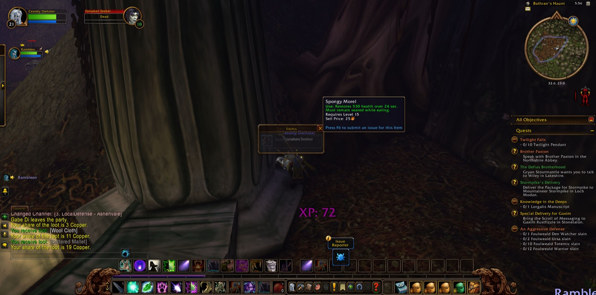

Cassidy Darkstar set out from The Zoram Strand, on the western edge of Ashenvale, and there Errook, a druid of his own kind, joined him for a brief while before their roads parted. Cassidy then went down into Blackfathom Deeps and took a picture as he crossed its threshold. Within that place he found other companions: Bluntz, a paladin, who stayed with him a little while, and Rambleon, a hunter, who was to be the most faithful fellow of all that long road. Blackfathom did not welcome them, and Cassidy fell there once and woke in Twilight Vale in Darkshore. Bluntz took his leave soon afterwards.


When Cassidy came again to Twilight Vale, Rambleon was with him once more. Together they turned south into Ashenvale and climbed to Bathran's Haunt, where the Forsaken had made their camp among the old stones and in The Ruins of Ordil'Aran close by. The work there was long and hard. Forsaken Seekers, Thugs and Herbalists fell before them, many times over, and the road back from Twilight Vale grew well known to Cassidy's feet. Still he returned each time, and step by step the errands were done. He gathered four Minor Mana Potions for the task called "Ineptitude + Chemicals = Fun," and in the end he gathered all five locks of Bathran's Hair. Gabe, another druid, fought beside him among the ruins for a short while. Cassidy took many pictures at Bathran's Haunt, more than anywhere else, as though he wished to keep a memory of the place where he had held on longest.


He brought Bathran's Hair to Maestra's Post, and there the errand was finished. In its place he was given two more: "Orendil's Cure," to be carried to Pelturas Whitemoon in Astranaar, and "Supplies to Auberdine." On the road Dark Strand Assassins and Forsaken Scouts stood against him, and a Ghostpaw Runner as well, but none could keep him from Astranaar. He placed the cure in the hands of Pelturas Whitemoon, and in return he was given a new errand that bore a fair name: "Elune's Tear."


After that Cassidy went back and forth across Ashenvale between Maestra's Post and the woods to the west. He again took up the task of carrying supplies to Auberdine, and he was again set on by enemies in the open country. A priest named Night walked beside him for a few short steps, and Gabe returned for a moment before going his own way. At the last Cassidy came again to Astranaar, with Rambleon's long company behind him and two errands still in his pack. He rested there, and the road beyond lay open.


